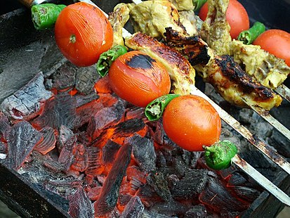

Seekh Kebab:
Turkish Adana kebabi, lamb kebab with charred peppers and tomatoes, an onion-sumac-parsley salad, and lavas
Kebabs are various cooked meat dishes, with their origins in Middle Eastern cuisine. Many variants are popular throughout Asia, and around the world.